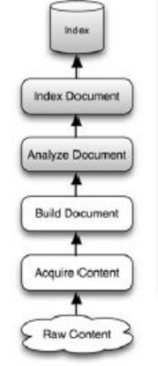
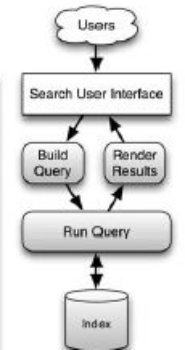
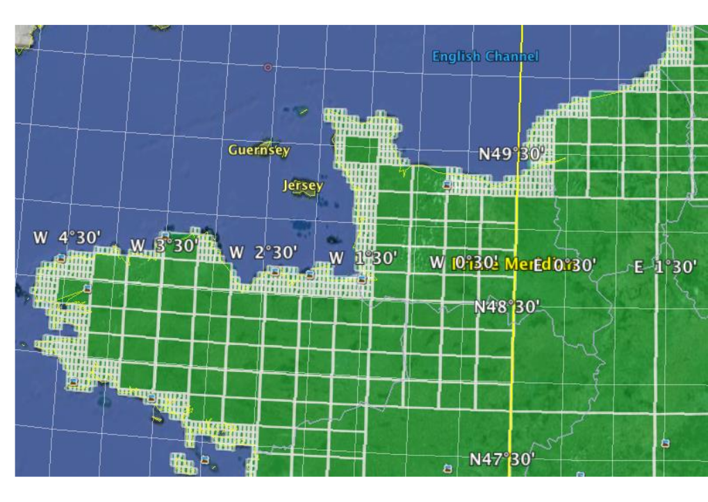

Lucene Spatial
http://talks.thesteve0.com/lucenespatial
Presented by:
Steven Pousty
@TheSteve0 on Twitter, IRC, Ingress, SmugMug, Skype, and Github
Agenda
- A little about Lucene Spatial
- See some demos
Assumptions
- You write some code
- You will ask questions
About Lucene
Doug Cutting - 1999
Some facts
Why not a database?
- Lucene has amazing analysis of text values
- Handles internationalization with ease
- Can handle incremental updates
- Compiled flat file with inverted indices means we can get incredibly fast speeds
Various Lucene Projects
| PROJECT NAME | Lucene | SOLR | ElasticSearch | Hibernate Search |
|---|---|---|---|---|
| FOCUS | Underlying library | Enterprise search platform | Distributed real-time search and analytics engine for the cloud | ORM for Lucene |
| HANDLES SPATIAL | Spatial4J and Lucene Spatial | Uses the Lucene Implementation | Uses the Lucene Implementation | Custom |
| LINK TO GET STARTED | Stack Overflow | Solr | ElasticSearch | Hibernate Search |
General Flow in Lucene
 The pieces in Lucene Spatial
Spatial4J
- Provides the geographic shape.
- Understand all the hard Geography and Geometry bits
Lucene Spatial
- Provides the indexing stratgies
- Also provides the ability to do the spatial queries with the shapes
Lead maintainer is Dave Smiley who is freelance search consultant / developer
How does Lucene Spatial work - indexing
- You create a spatial strategy that determines how things will be indexed
- Then for each "document", you create one (or more) spatial objects to store in a field
- The you use the spatial strategy to transform the object into a indexable field
- Add the field to the document
- Add the document to the index
- Commit and Save your index
How does Lucene Spatial work - searching
- You create a spatial strategy that determines how things will be searched - must match index strategy
- Then you create a shape that you want to use in your search
- Make spatial arguments - shape and spatial operation (i.e. intersects)
- Use the arguments to make a filter or query
- Do the search using query or filter
Indexing - main one is RecursivePrefixTree
Use Geohash or Quad tree
Future
- A lot of improvements coming
- Better Spatial Indexing
- Better Handling of Geodesic
- Better Benchmarking
- HEAT MAPS!!!!
Too much talk - CODE
The indexer code (Can run anywhere you havea JVM)
Spatial Lucene IndexerThe REST web service (ready to run on OpenShift)
Lucene SpatialLet's spin up a Tomcat 7 web application and look at the app
rhc app create myapp tomcat7
OR
rhc app create myapp jbosseap
One Source to Bind Them All

Let's wrap it up
- Spatial + Full Text is easy and fun with Lucene
- Easy to get up and running